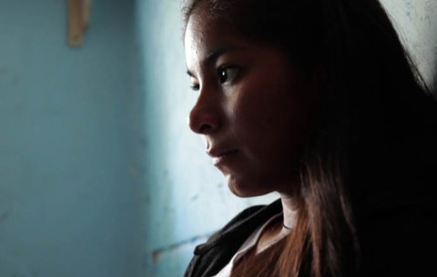
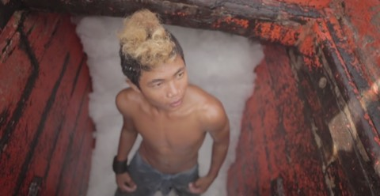
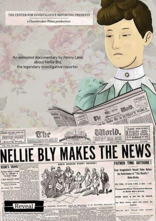
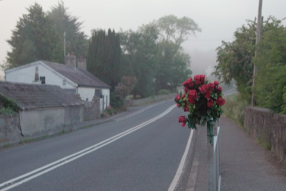
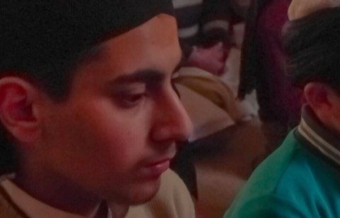
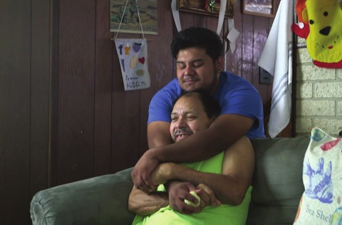

U.S. Naval Heritage Center
2017, 2018, 2019, 2022, 2024, 2025
Films screened here
 8 Days at WareRachel Lauren Mueller · Anne Sundberg · Yoruba Richen, Meg Shutzer2022 · 27 min
8 Days at WareRachel Lauren Mueller · Anne Sundberg · Yoruba Richen, Meg Shutzer2022 · 27 min A Woman CapturedBernadett Tuza-Ritter2018 · 89 min
A Woman CapturedBernadett Tuza-Ritter2018 · 89 min- Acts of ReparationSelina Lewis Davidson, Macky Alston2024 · 113 min
 American Coup: Wilmington 1898Brad Lichtenstein, Yoruba Richen2024 · 111 min
American Coup: Wilmington 1898Brad Lichtenstein, Yoruba Richen2024 · 111 min American PainDarren Foster2022 · 106 min
American PainDarren Foster2022 · 106 min Angels Are Made of LightJames Longley2018 · 117 min
Angels Are Made of LightJames Longley2018 · 117 min Ask E. JeanIvy Meeropol2025 · 91 min
Ask E. JeanIvy Meeropol2025 · 91 min BedlamKenneth Rosenberg2019 · 86 min
BedlamKenneth Rosenberg2019 · 86 min Bellingcat: Truth in a Post-Truth WorldHans Pool2019 · 88 min
Bellingcat: Truth in a Post-Truth WorldHans Pool2019 · 88 min Bikram: Yogi, Guru, PredatorEva Orner2019 · 86 min
Bikram: Yogi, Guru, PredatorEva Orner2019 · 86 min Blue RoomMerete Mueller2022 · 12 min
Blue RoomMerete Mueller2022 · 12 min Body PartsKristy Guevara-Flanagan2022 · 90 min
Body PartsKristy Guevara-Flanagan2022 · 90 min BombshellBen Loeterman2025 · 82 min
BombshellBen Loeterman2025 · 82 min Bully. Coward. Victim. The Story of Roy CohnIvy Meeropol2019 · 98 min
Bully. Coward. Victim. The Story of Roy CohnIvy Meeropol2019 · 98 min Canceled: The Paula Deen StoryBilly Corben2025 · 103 min
Canceled: The Paula Deen StoryBilly Corben2025 · 103 min Citizen KAlex Gibney2019 · 128 min
Citizen KAlex Gibney2019 · 128 min
Cocaine PrisonVioleta Ayala2017 · 78 min CycleLaura Dyan Kezman, William Howell2025 · 95 min
CycleLaura Dyan Kezman, William Howell2025 · 95 min Dark SunsJulien Elie2019 · 154 min
Dark SunsJulien Elie2019 · 154 min Devil's Freedom (La Libertad del Diablo)Everardo González2017 · 74 min
Devil's Freedom (La Libertad del Diablo)Everardo González2017 · 74 min- Did You Wonder Who Fired the Gun?Travis Wilkerson2017 · 70 min
 Divide and Conquer: The Story of Roger AilesAlexis Bloom2018 · 107 min
Divide and Conquer: The Story of Roger AilesAlexis Bloom2018 · 107 min Dust to DustKôsai Sekine2024 · 89 min
Dust to DustKôsai Sekine2024 · 89 min End of TruthEric Matthies, Tricia Todd2017 · 58 min
End of TruthEric Matthies, Tricia Todd2017 · 58 min False ConfessionsKatrine Philp2018 · 91 min
False ConfessionsKatrine Philp2018 · 91 min
Ghost FleetShannon Service, Jeffrey Waldron2018 · 88 min Hall of MirrorsEna Talakic, Ines Talakic2017 · 87 min
Hall of MirrorsEna Talakic, Ines Talakic2017 · 87 min- HazingByron Hurt2022, 2023 · 103 min
 HomegrownMichael Premo2024 · 109 min
HomegrownMichael Premo2024 · 109 min- How We ChooseAlexandria Bombach2018 · 15 min
 I Hope This Helps!Daniel Freed2024 · 51 min
I Hope This Helps!Daniel Freed2024 · 51 min- In Dry WaterKevin Clancy2019 · 14 min
 Into the Weeds: Dewayne “Lee” Johnson vs. Monsanto CompanyJennifer Baichwal2022 · 96 min
Into the Weeds: Dewayne “Lee” Johnson vs. Monsanto CompanyJennifer Baichwal2022 · 96 min KhartoumIbrahim Snoopy Ahmad, Timeea Mohamed Ahmed, Rawia Alhag2025 · 82 min
KhartoumIbrahim Snoopy Ahmad, Timeea Mohamed Ahmed, Rawia Alhag2025 · 82 min Listen to MeStephanie Etienne, Kanika Harris2025 · 77 min
Listen to MeStephanie Etienne, Kanika Harris2025 · 77 min Lost and FoundOrlando von Einsiedel2019 · 22 min
Lost and FoundOrlando von Einsiedel2019 · 22 min Magic & MonstersNorah Shapiro2025 · 89 min
Magic & MonstersNorah Shapiro2025 · 89 min Mariupolis 2Mantas Kvedaravičius2022 · 112 min
Mariupolis 2Mantas Kvedaravičius2022 · 112 min Mistress DispellerElizabeth Lo2024 · 94 min
Mistress DispellerElizabeth Lo2024 · 94 min Myanmar DiariesThe Myanmar Film Collective2022 · 70 min
Myanmar DiariesThe Myanmar Film Collective2022 · 70 min
Nellie Bly Makes the NewsPenny Lane2018 · 23 min
No Stone UnturnedAlex Gibney2017 · 111 min Of Fathers and SonsTalal Derki2018 · 99 min
Of Fathers and SonsTalal Derki2018 · 99 min Our New PresidentMaxim Pozdorovkin2018 · 12 min
Our New PresidentMaxim Pozdorovkin2018 · 12 min People’s Republic of DesireHao Wu2018 · 95 min
People’s Republic of DesireHao Wu2018 · 95 min PoisonedJoy Ash2025 · 90 min
PoisonedJoy Ash2025 · 90 min Poppy CrashAndalusia Knoll Soloff2019 · 11 min
Poppy CrashAndalusia Knoll Soloff2019 · 11 min Pray for Our SinnersSinéad O’Shea2022 · 81 min
Pray for Our SinnersSinéad O’Shea2022 · 81 min Refuge(e)Sylvia Johnson2019 · 15 min
Refuge(e)Sylvia Johnson2019 · 15 min Relentless MemoryPaula Rodriguez Sickert2024 · 93 min
Relentless MemoryPaula Rodriguez Sickert2024 · 93 min Roll Red RollNancy Schwartzman2018 · 80 min
Roll Red RollNancy Schwartzman2018 · 80 min Rovina's ChoiceThomas Jennings, Annie Wong2025 · 22 min
Rovina's ChoiceThomas Jennings, Annie Wong2025 · 22 min Sealed in BloodSofian Khan2022 · 10 min
Sealed in BloodSofian Khan2022 · 10 min Searching for AmaniNicole Gormley, Debra Aroko2024 · 80 min
Searching for AmaniNicole Gormley, Debra Aroko2024 · 80 min Secret Screening2022 · 94 min
Secret Screening2022 · 94 min Stolen Daughters: Kidnapped by Boko HaramKaren Edwards, Gemma Atwal2018 · 75 min
Stolen Daughters: Kidnapped by Boko HaramKaren Edwards, Gemma Atwal2018 · 75 min
Strands of ResistanceBrent Huffman2022 · 22 min TataLina Vdovîi, Radu Ciorniciuc2025 · 82 min
TataLina Vdovîi, Radu Ciorniciuc2025 · 82 min The Accidental SpyAnthony Wonke2024 · 98 min
The Accidental SpyAnthony Wonke2024 · 98 min The Black SwanMads Brügger2025 · 90 min
The Black SwanMads Brügger2025 · 90 min The Family StatementGrace Harper, Kate Stonehill2022 · 15 min
The Family StatementGrace Harper, Kate Stonehill2022 · 15 min The Feeling of Being WatchedAssia Boundaoui2018 · 87 min
The Feeling of Being WatchedAssia Boundaoui2018 · 87 min The GrabGabriela Cowperthwaite2022 · 104 min
The GrabGabriela Cowperthwaite2022 · 104 min The Killing of a JournalistMatt Sarnecki2022 · 100 min
The Killing of a JournalistMatt Sarnecki2022 · 100 min The New Greatness CaseAnna Shishova-Bogolyubova2022 · 96 min
The New Greatness CaseAnna Shishova-Bogolyubova2022 · 96 min The NightcrawlersAlexander A. Mora2019 · 39 min
The NightcrawlersAlexander A. Mora2019 · 39 min The Other Little Black BookBarbara Corbellini Duarte, Mark Adam Miller2022 · 15 min
The Other Little Black BookBarbara Corbellini Duarte, Mark Adam Miller2022 · 15 min The Other Side of EverythingMila Turajlic2017 · 100 min
The Other Side of EverythingMila Turajlic2017 · 100 min The Panama PapersAlex Winter2018 · 100 min
The Panama PapersAlex Winter2018 · 100 min- The Preppy Murder: Death in Central ParkRicki Stern, Annie Sundberg2019 · 86 min
 The Rape of Recy TaylorNancy Buirski2017 · 91 min
The Rape of Recy TaylorNancy Buirski2017 · 91 min The StrikeJoeBill Muñoz, Lucas Guilkey2024 · 86 min
The StrikeJoeBill Muñoz, Lucas Guilkey2024 · 86 min- The TrialJohanna Hamilton2018 · 17 min
 The Truth About Killer RobotsMaxim Pozdorovkin2018 · 82 min
The Truth About Killer RobotsMaxim Pozdorovkin2018 · 82 min
The UnafraidHeather Courtney, Anayansi Prado2018 · 87 min Trust WHOLilian Franck2017 · 85 min
Trust WHOLilian Franck2017 · 85 min UnprotectedNadia Sussman2018 · 45 min
UnprotectedNadia Sussman2018 · 45 min VoyeurMyles Kane, Josh Koury2017 · 95 min
VoyeurMyles Kane, Josh Koury2017 · 95 min- Waiting for TearahJuliana Schatz Preston2019 · 23 min
- We Became FragmentsLuisa Conlon, Hanna Lane Miller, Lacy Jane Roberts2018 · 14 min
Sessions held here
- 2022 · Fri Oct 14 · 3:00 PMScreening eventShortcuts